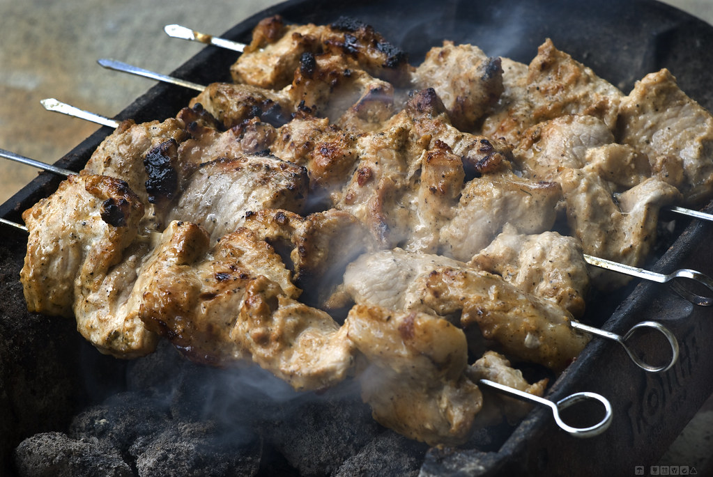

Featured
-
Fruits
Fruits are good for many reasons can lower blood pressure, reduce the risk of heart disease and stroke, prevent some types of cancer, lower risk of eye and digestive problems, and have a positive effect upon blood sugar, which can help keep appetite in check.
-
Vegetables
Along with fruits vegetables can also reduce the risk of heart disease and stroke. But they are diffrent still because vegetables are a good source of vitamins and minerals, including folate, vitamin C and potassium. They're an excellent source of dietary fibre, which can help to maintain a healthy gut and prevent constipation and other digestion problems. A diet high in fibre can also reduce your risk of bowel cancer.
-

Meats
Meats such as chicken, pork, lamb and beef are all rich in protein. Red meat provides us with iron, zinc and B vitamins. Meat is one of the main sources of vitamin B12 in the diet. Food hygiene is important when storing, preparing and cooking meat.